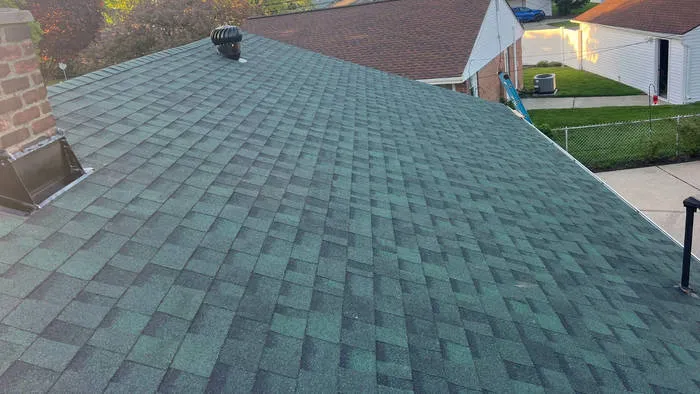

4.9 rating · 33 homeowner reviews


Owens Corning Preferred Contractor
TotalProtection® Warranty
6,000 Roofing Jobs
30+ Years • Licensed & Insured in Michigan
Lincoln Park Roofing installs vinyl and fiber cement siding for homes across Downriver Michigan and Wayne County — same licensed in-house crew as roofing, free written estimates, no subcontractors. Siding pricing based on home size and material selection. Free on-site estimate for all siding projects. Lincoln Park Roofing is a Owens Corning Preferred Contractor serving all of the Downriver Michigan region of Wayne County — bringing 6,000 completed jobs and 30+ years of local experience to every project. No subcontractors. Free written estimates. Workmanship warranty on all work.
Downriver Michigan's dense post-war housing stock, proximity to the Detroit River, and extreme Michigan freeze-thaw cycles create specific roofing challenges that a local crew understands firsthand. Based in Lincoln Park at 2026 Thomas St, we're centrally located to reach any community in Downriver quickly — same-day emergency response available across the entire region.
Owens Corning Preferred Contractor
TotalProtection® Warranty
6,000 Jobs Done
30+ Years of Experience
Call or Text
(734) 224-5615
Downriver Roofing Facts
Properly installed siding with a weather-resistant barrier can reduce heating and cooling costs by 10–17 percent in Michigan's climate. — U.S. Department of Energy, Building Envelope Research
Vinyl siding now covers more than 70 percent of Downriver Michigan homes built before 1980, making it the dominant exterior cladding material in the region. — U.S. Census Bureau American Housing Survey, Michigan
“Replaced all the siding on our 1962 ranch in Melvindale. They matched the profile exactly to the sections we kept. Clean, fast, no subcontractors — same crew start to finish. The house looks like it was built last year.”
— Angela P., Melvindale, MI
Owens Corning Preferred Contractor
TotalProtection® Warranty covers materials AND workmanship — most competitors only cover materials.
6,000 Jobs, 30+ Years
The most experienced crew serving Downriver.
No Subcontractors. Ever.
Same licensed in-house crew on every job in Downriver.
Honest Pricing
Free written estimates. No hidden fees. We tell you if a repair is all you need.
Same-Day Emergency Response
Active leaks and storm damage get same-day dispatch across Downriver.
5-Star Rated
Google and Yelp verified reviews from Downriver homeowners.
Need Siding Installation in Downriver?
Free written estimate. Same-day emergency response available.
Written by Lincoln Park Roofing Team • Lincoln Park Roofing • Updated 2026
Downriver Services
Free Estimate
Call or text — we'll get you scheduled fast across Downriver.
Call (734) 224-5615 Text UsCommon questions from Downriver homeowners about siding installation.
Vinyl siding (most popular in Downriver Michigan) and fiber cement siding for premium performance. Both available in multiple profiles and colors.
Yes — if damage is localized, we can replace just the damaged sections. Full tear-off is only recommended when most of the siding needs work.
Most homes are completed in 2–4 days depending on size and complexity.
Yes — good siding dramatically reduces heating and cooling costs, prevents moisture intrusion, and increases home value.
Never. The same in-house crew that handles roofing handles siding — consistent quality and licensing on every job.
Downriver's ranches and bungalows — mostly built in the 1950s–70s — typically use a 4-inch or 5-inch Dutch lap profile. Lincoln Park Roofing stocks a wide range of profiles and can match original siding exactly when replacing only partial sections. For full replacements, we can also upgrade to thicker insulated vinyl siding, which dramatically improves energy performance in older homes with minimal original wall insulation.
Click any city for local roofing info. Same Owens Corning certified crew across all of Downriver.